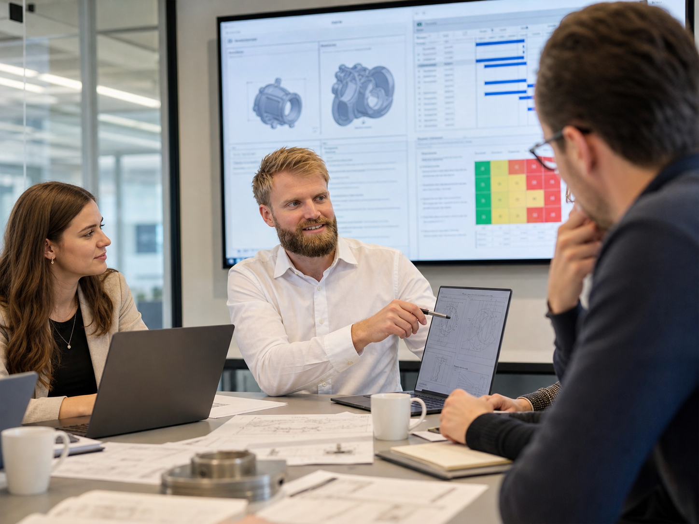

Feldausfälle? Unerwartete Streuung? Unsichere Lebensdauerprognosen?
RelTest unterstützt Unternehmen, wenn technische Unsicherheit zu Projekt-, Kosten- oder Haftungsrisiken wird: als Beratungspartner, langfristige Entwicklungsbegleitung, Inhouse-Schulung oder digitales Lernangebot.
Beratung
Zuverlässigkeit, DoE, Testplanung, Risikoanalyse und Datenbewertung.
Langfristige Kooperation
Methoden, Reviews, Dokumentation und Absicherung nach Stand der Technik.
Schulungen vor Ort
Praxisnahe Seminare für Entwicklungs-, Erprobungs- und Qualitätsteams.
RelTest Academy
Strukturiertes E-Learning für Ingenieurinnen und Ingenieure.

Gedanke dieses Entwurfs
Dieser Einstieg eignet sich, wenn Besucher sehr schnell erkennen sollen: RelTest hilft bei konkreten technischen Unsicherheiten und bietet dafür mehrere klar unterscheidbare Unterstützungsformen.